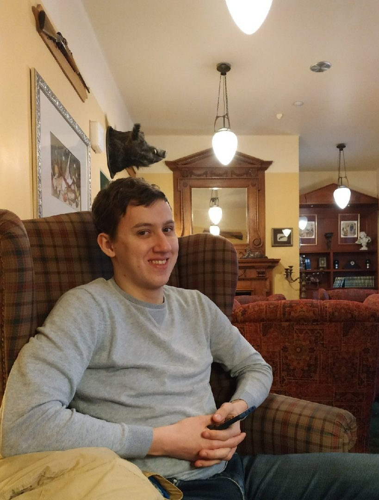

- ФИО: Рудин Андрей Александрович
- Возраст: 23 года
- Javascript (типы данных(числа,логические, строки, специальные), операторы( математические, логические, унарные, тройные, конкатенация строк), динамическое приведение типов, переменные, условия(if, else if, else), циклы(while, do while))
- CCS3:псевдоклассы, псевдоэлементы
- HTML5:семантическая верстка
- Примеры работ:
- 